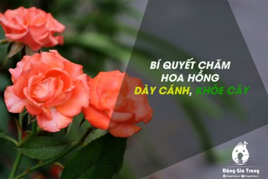

Thêm 1 công trình khảo cứu về Truyện Kiều

Đó là cuốn Truyện Kiều - Bản Duy Minh Thị 1872 do An Chi phiên âm, chú giải và thảo luận. Sách dày 600 trang khổ lớn kèm nhiều phụ bản đẹp.
Có gì 'Bên trong bộ não của Bill Gates'?
Bill Gates không xa lạ với thế giới phim ảnh, có hàng chục phim về ông. Nhưng trong thập niên vừa qua, ông xuất hiện dày đặc với vai trò nhà hoạt động nhân đạo.
Vũ Đức Sao Biển - đa tài và khiêm tốn
Hay tin nhạc sĩ Sao Biển qua đời, nhiều bạn bè đồng nghiệp nhớ lại những tháng ngày cùng cộng sự và mối giao tình với ông, nổi bật là hình ảnh nghệ sĩ đa tài và khiêm tốn
Ký ức Sài Gòn trong lòng bàn tay
Có ai ngờ ký ức Sài Gòn có thể thu bé lại vừa khéo trong lòng bàn tay nhưng vẫn đầy đủ, chân thật đến từng chi tiết, không khỏi khiến người ta bồi hồi, thương nhớ.
Sài Gòn rộng lượng
Tính hào sảng của người Sài Gòn có từ thời khai sinh lập địa, càng ngày càng được chia sẻ và mang lại cho cộng đồng những câu chuyện dễ thương, xúc động có sức lan tỏa.
Bảo tàng giảm giá vé tham quan

Khách tham quan rất thưa là tình hình chung của các bảo tàng sau thời điểm giãn cách xã hội. Đây là một thực tế trái ngược so với cùng kỳ năm ngoái.
Người già và bánh nếp

Bạt nằm vật ra xe, nhai suất cơm hộp vừa được phát. Vẫn chưa thấy chủ báo nghỉ làm dù mỗi ngày con số người nhiễm COVID-19 các tỉnh ở Nhật tăng chóng mặt.
Tình nghệ sĩ giữa mùa dịch

Sáng nay tại Hội Sân khấu TP.HCM, chương trình tặng quà cho các nghệ sĩ, công nhân, hậu đài nghèo do NSND Lệ Thủy phối hợp một số nghệ sĩ đã diễn ra.